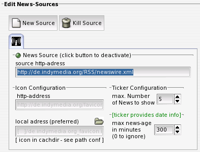

IV.I. News-Sources
Dieser Bereich enthält alle Einstellungen, die direkt mit einer News-Quelle zusammenhängen. Der in der Abbildung runde Button (hier grün) dient zum aktivieren oder deaktivieren der Quelle - per default sind die Quellen immer aktiviert.

source http-address
Hier wird die Quelle der zu beziehenden Nachrichten angegeben. Das Protokoll (http) muss dabei nicht angegeben werden. Diese Adresse dient gleichzeitig zur eindeutigen Identifikation der Quelle - zwei gleiche Quellen (wozu auch immer) sind darum nicht möglich.
Der Eintrag einer News-Quelle ist alles, was für eine erste Nutzung des Tickers notwendig ist.
Eine Änderung dieser Quell-Adresse erstellt immer eine neue News-Quelle, die gecachten Nachrichten der alten News-Quelle gehen dabei verloren. Wenn im Feld für das zu verwendende Icon kein besonderer Eintrag gewählt wurde, wird dieser wieder anhand der News-Source-Adresse erstellt. Ist eine neue News-Quelle hinzugefügt worden (was erst nach ca. 2 Sekunden ohne Veränderung der Adresse passiert), wird versucht, Nachrichten von dieser Quelle zu beziehen. Ein Fehlschlagen dieses Versuchs wird gemeldet.
Icon Configuration
(http-address and local address)
Jeder News-Source ist ein Icon zugeordnet, welches im im Ticker sowie im News-Source-Dialog-Tab angezeigt wird. Per default wird dabei als http-Adresse auf dem News-Server nach der Datei favicon.ico gesucht und diese genutzt. Diese wird, wenn keine lokale Kopie gefunden wurde, automatisch vom Server bezogen und per default im lokalen Cache unter einem von der Quelle abgeleiteten Namen gespeichert (Dies wird nach ca. 2 Sekunden ohne Veränderung des Eintrags in http-address gestartet). Wird unter der lokalen Adresse ein Icon gefunden, wird kein Versuch unternommen, ein Icon vom Server zu beziehen. Als Icon kann daher auch jedes andere lokal vorhandene Bild genutzt werden, indem dessen Adresse bei 'local address' eingegeben bzw. ausgewählt wird.
Ticker Configuration
Hier kann eingestellt werden, wieviel Nachrichten der News-Quelle maximal im Ticker angezeigt werden sollen. Im lokalen Cache befinden sich jedoch alle Nachrichten, um bei folgenden Aktualisierungen diese bereits veralteten Nachrichten wiederzuerkennen. Wenn diese Beschränkung nicht gewünscht wird, muss der Wert hier auf einen unerreichbar hohen Wert gesetzt werden.
[ticker provides date info]
Wenn die Newsquelle den einzelnen Nachrichten Zeitstempel zuordnet (dc:date-field nach dublin-core-standard), wird dieser Bereich der Konfiguration angezeigt. In diesem Fall kann hier eingestellt werden, wieviel Minuten nach ihrem Erstellungsdatum Nachrichten noch als aktuell gelten sollen und im Ticker angezeigt werden.